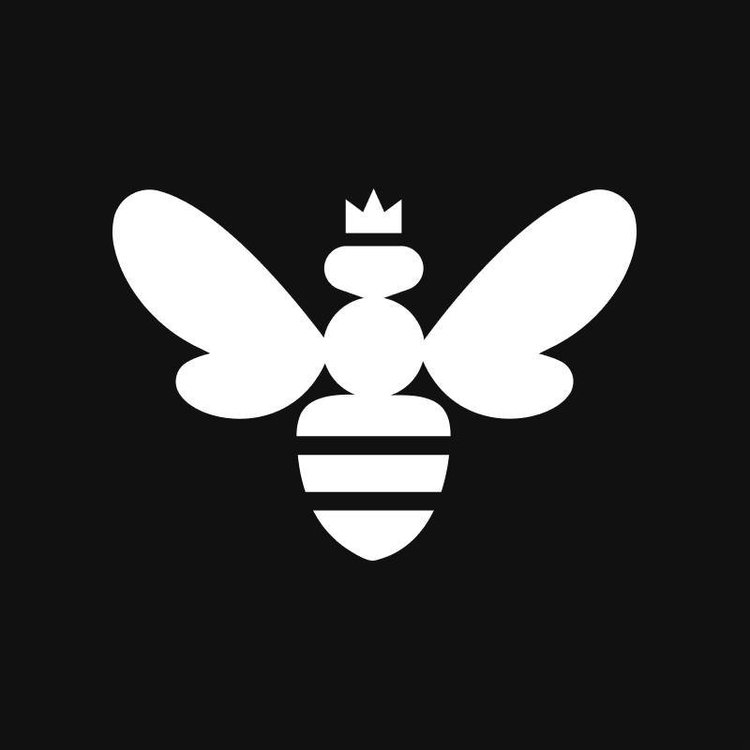

Danny Hanes
Danny HanesCareer
A decade and a half across Apple device management, endpoint security, and identity — from running university Mac fleets to fighting AI-driven impersonation.
-
imper.ai
Founding Solutions Engineer
2026 – Present
Positioning imper.ai's workforce identity impersonation detection platform — defending the two places attackers now walk in through the front door: the help desk and the hiring pipeline. Think help-desk vishing, deepfake interviews, and fraudulent-worker tradecraft.
- Representing imper.ai on the ground at industry events, including SecureWorld Chicago and the Central Ohio ISSA InfoSec Summit.
- Presented “Help Desk & Hiring: The Workforce Identity Gap Attackers Exploit” at the Central Ohio ISSA InfoSec Summit.
-
Beyond Identity
Senior Solutions Engineer
2025 – 2026
Supported enterprise sales cycles for the Beyond Identity Secure Access Platform — phishing-resistant MFA, device trust, zero-trust authentication, and RealityCheck, a deepfake-prevention product for enterprise communication channels — selling into retail, fintech, and local government.
- Demoed and positioned RealityCheck, which verifies both the user and the device behind the camera using device-bound passkeys and biometric proof, deploying into Zoom and Microsoft Teams to counter AI-driven impersonation attacks.
- Configured and demonstrated conditional access policies evaluating device posture — encryption, firewall state, antivirus presence, OS versions — integrating with CrowdStrike, Intune, Jamf, and SentinelOne to enforce zero-trust authentication decisions.
- Framed solution value against the evolving threat landscape — phishing, deepfakes, AI prompt injection, and threat actors like Scattered Spider — in discovery, demos, and executive conversations.
- Guided customers through integration architecture across IdPs, SIEMs, MDMs, and security tooling during discovery and POC engagements.
-

Kandji
Senior Solutions Engineer
2022 – 2025
Led pre- and post-sales at Kandji, a high-growth startup, for a unified Apple endpoint platform spanning device management, EDR, vulnerability management, Passport (identity), and compliance automation — positioned as a consolidation play built on unified visibility and TCO reduction.
- Achieved the #1 global Solutions Engineer ranking in FY25, closing over 100 new-business deals while increasing ACV by 42% and total ARR by 48%.
- Generated over $3M in net-new revenue partnering with 300+ enterprise and mid-market customers on tailored device management and security solutions.
- Represented Kandji at RSA Conference for the company's EDR product launch — three days of live demos, discovery, and pipeline building at the booth.
- Delivered proof-of-value engagements for EDR and vulnerability management across ~100 deals, showing customers their live CVE exposure and a path to consolidated tooling.
- Won 100+ competitive deals against Jamf, Intune, and Mosyle, and partnered with the London team to close ~75 EMEA deals across time zones.
- Presented internal enablement sessions including “WWDC Changes,” “Discovery,” and “Documentation Best Practices” to the revenue organization.
-
Allstate
Senior Mac Platform Engineer
2020 – 2022
Designed and built the management and compliance structure for 3,000+ macOS devices at a Fortune 100 financial services company, implementing security controls and compliance enforcement in a regulated environment.
- Developed custom Bash and Zsh scripts to audit and enforce CIS compliance controls across the organization, supporting internal and external regulatory audits.
- Partnered with network and security teams to diagnose and resolve endpoint connectivity issues across firewalls, proxies, and VPNs for a fully remote Mac fleet.
-
UNC Charlotte
Business & Technology Application Specialist
2012 – 2020
- Oversaw a large-scale Apple device ecosystem — 3,000+ devices serving 25,000+ university students across labs, loaner programs, and faculty/staff.
- Designed and implemented a zero-touch deployment process that carried the university's Mac fleet through its transition to remote operations.
Education & Certifications
Education
Bachelor's Degree, Software & Information Systems
University of North Carolina at Charlotte